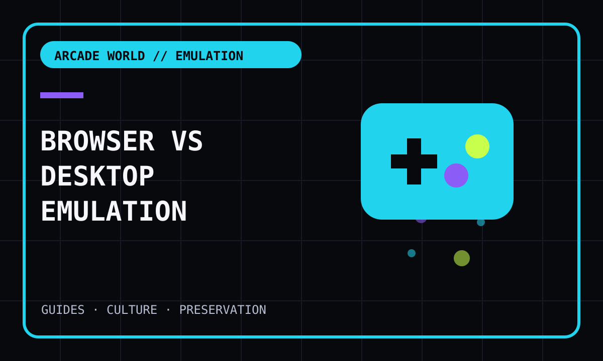

Browser vs Desktop Emulation
When the browser is enough and when a desktop app becomes the better product.

TL;DR
When the browser is enough and when a desktop app becomes the better product.
Why gamers care
This matters because players want less friction, clearer choices and faster ways to get into a good session.
Move
Use the catalog to explore the topic and choose the play setup that fits your library.
What players should know
When the browser is enough and when a desktop app becomes the better product. The useful version of this topic is practical: what to click, what to avoid and how it improves the Arcade World library.
How it fits Arcade World
This topic connects discovery, local play and reliable catalog pages. It helps players understand the difference between browsing a game page and running a personal file in the emulator.
Practical checklist
Use clear game names, stable pages, creator source notes and local-only file handling. That combination is stronger for trust and long-term platform growth.
Keep exploring
Open the Game Room or visit the latest stories.